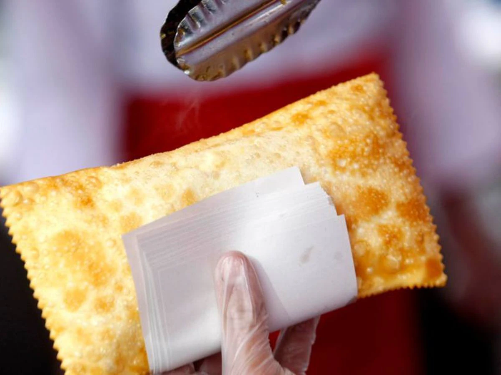

Pastel de feira

Ingredientes para o recheio
- 1 colher de sopa de azeite
- 1 kg de carne moída
- 1 colher de sopa de cebola ralada
- ½ colher de chá de alho picado
- Sal e pimenta-do-reino a gosto
- ½ colher de chá de páprica doce
- ½ xícara de chá de pimentão picado
- 4 ovos cozidos e picados
- Salsinha picada a gosto
Igredientes para a massa
- 3 xícaras de chá de farinha de trigo
- 1 colher de sopa de sal
- 2 colheres de sopa de óleo
- 1 dose de pinga (50 ml)
- 250 ml de água
Preparo do recheio
- Reúna todos os ingredientes;
- Leve uma panela ao fogo médio e refogue a carne moída no azeite;
- Acrescente a cebola, o alho, sal, pimenta, a páprica, o pimentão, mexa sem parar e deixe cozinhar até que os ingredientes comecem a murchar;
- Adicione os ovos e a salsinha, misture e reserve;
Preparo da massa e montagem
- Reúna todos os ingredientes;
- Em uma tigela, coloque a farinha, o sal, o óleo, a pinga, a água (aos poucos) e misture até virar uma massa;
- Transfira a massa para uma bancada enfarinhada e sove-a até que ela comece a desgrudar das mãos;
- Embale a massa no plástico filme e deixe-a descansar por 15 minutos;
- Coloque a massa em uma bancada enfarinhada novamente e, com a ajuda de um rolo, abra-a de modo a deixá-la bem fina;
- Acrescente o recheio, corte a massa e feche os pastéis com a ajuda de um garfo. Repita o processo até a massa acabar;
- Frite-os em óleo bem quente e sirva na sequência.
Dica
Antes de colocar o primeiro pastel para fritar,
coloque somente a ponta da massa ou separe um pedaço
pequeno a fim de certificar que o óleo está realmente
quente. A massa deve borbulhar no óleo.
Você também pode adaptar seu pastel escolhendo uma opção
de massa de pastel simples ou recheando-o com o que você
mais gostar: queijo, calabresa e frango são ótimas opções.
Capriche e tenha um bom apetite!
Ver outras Receitas